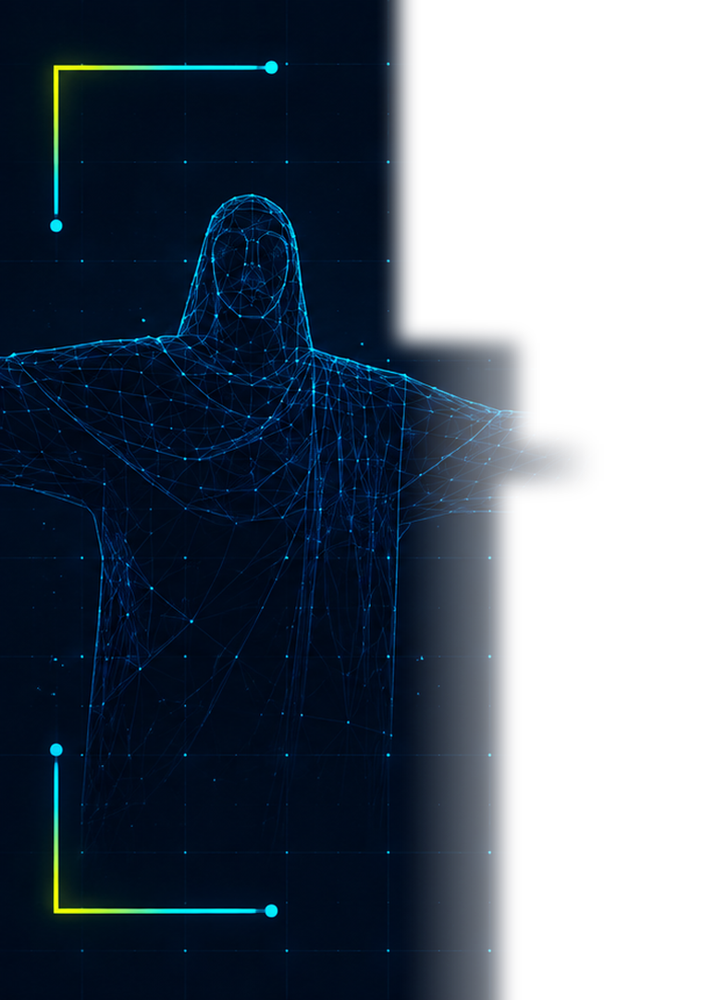
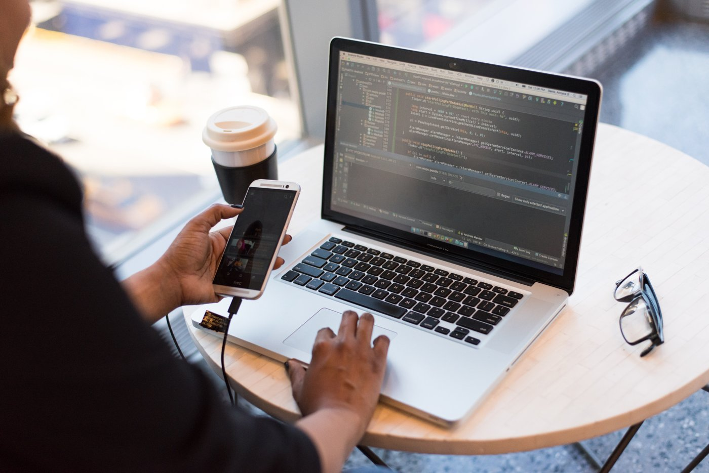
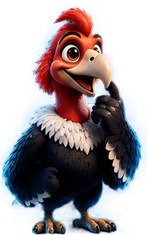
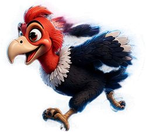
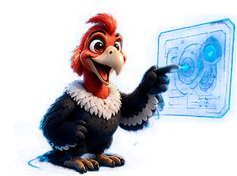

Student Community Day · Cochabamba
De programar con IA
a construir con agentes
Harness · Skills · Loops · Orquestación con Orca
10 OCTUBRE 2026
Quién te habla
Rodrigo
Torrico
Senior Software Engineer · Unosquare
7 años full-stack · Founder SaaS
Mentor de otros devs
7 años full-stack · Founder SaaS
Mentor de otros devs
Instagram@tokidev.ai
GitHub@tokidev-ai
Antes de empezar
Un millón de líneas. ¿Cuántas a mano?
0
3 personas · 5 meses · +1.500 PRs
Fuente: OpenAI, Harness engineering, febrero 2026
El viaje de hoy
Seis paradas, un proyecto
01
Dónde estamos
02
Harness
03
Skills
04
Loops
05
Orca
06
Tu ruta
Al final: tu plan para el lunes

01 · Dónde estamos
Usar agentes
ya es el piso
0%
usa agentes de código cada semana
0%
los usa todos los días
0%
de su código lo escribe un agente
JetBrains, 2026, +15.000 devs (vía charla Agent First)
01 · Dónde estamos
Confiamos poco y revisamos menos
0%
no confía del todo en el código de la IA
0%
lo revisa siempre antes del commit
Sonar, enero 2026
01 · Dónde estamos
¿En qué nivel estás?
L0
Autocompletado
L1
Pasante
L2
Junior que revisas línea a línea
L3
Dev que revisas sin escribir
L4
Equipo: tú escribes specs
L5
Fábrica oscura
~90% está aquí
Niveles de Dan Shapiro, enero 2026

01 · Impacto real
Devs expertos con IA: ¿más rápidos o más lentos?
Lo que creían
+20%
más rápidos
Lo que se midió
−19%
más lentos
METR, 2025. Su seguimiento de feb. 2026 sugiere más aceleración hoy
La IA amplifica: si tu base es buena, mejor. Si es caos, más caosDORA 2025 · Faros · Stanford
Mide entrega con DORA o DX Core 4, no con sensaciones
02 · Harness
Agent = Model + Harness
El caballo es fuerte. Sin arnés, no tira del carro hacia donde quieres
02 · Harness
Del prompt al entorno
Lenguaje
Prompt engineering
Cómo pides
›
Información
Context engineering
Qué ve el modelo
›
Entorno
Harness engineering
Cómo actúa y se corrige
No mejores el prompt, mejora el entorno
Levanta la mano si…
le explicaste lo mismo dos veces a un agente
Cada pregunta que un agente te hace dos veces es una decisión que no documentastePedro Anze · Agent First
02 · Harness
Guías antes, sensores después
Feedforward · antes de actuar
Guías
AGENTS.mdskillsconvencionesdocs de diseñoscripts de arranque
Feedback · durante y después
Sensores
linterstipostestsagente revisorobservabilidad
02 · Harness
Empieza por un archivo
# Proyecto API de reservas del centro de estudiantes ## Cómo correrlo pnpm dev · pnpm test ## Convenciones Código en inglés ## Decisiones tomadas No tocar /payments sin aprobación
Actualízalo cada vez que el agente falle
Regla de Greg Brockman
02 · Harness
Tu harness en seis pasos
01
AGENTS.md
En la raíz del repo
02
Repo legible
Planes dentro del repo
03
Sensores
Lint, tipos y tests
04
Observable
Logs y trazas
05
Revisor
Decide un humano
06
Itera
Fallo repetido, nueva regla
03 · Skills
MCP le da manos, las skills le dan hábitos
SKILL.md qué hace y cuándo scripts/ lo que ejecuta references/ lo que consulta templates/ lo que reutiliza
~100
tokens por skill hasta que la tarea coincide
Claude CodeCodexGemini CLICursor
03 · Skills
Las que más se recomiendan en 2026
Superpowers
Planear y probar antes de codificar
systematic-debugging
Depurar con método
frontend-design
Diseño deliberado
pdf · docx · xlsx
Documentos
skill-creator
Tu puerta a constructor
Agent-Browser
Verificación visual

03 · Skills
Instala 2 o 3, no 20
Resuelve un fallo que ya viste repetirse
Dice con precisión cuándo se activa
Tiene criterio de terminado
Léela antes: corre con tus permisos
Demo · misma tarea, con skill y sin skill
04 · Loop engineering
Diseña el ciclo, no el prompt
01
Meta
Qué es terminado
02
Acción
Usa herramientas
03
Observación
Lee resultados
04
Decisión
Seguir o corregir
05 · Parada
Éxito o tope
La verifica una máquina, no el modelo
Como un termostato: fijas la meta, él mide y corrige
04 · Loop engineering
Cuatro loops que ya puedes usar
| Loop | Idea | Ejemplo |
|---|---|---|
| /goal | Itera hasta cumplir una condición | Que pase la suite de tests |
| /loop | Repite cada cierto tiempo | Vigilar el CI y arreglar lo trivial |
| Evaluador y optimizador | Uno genera, otro critica | Código y revisión en ciclo |
| Monitoreo | Corre a lo largo del tiempo | Revisión diaria de dependencias |
04 · Loop engineering
Un loop sin tope es una factura sin tope
/goal tests de auth en verde · tope 3 vuelta 1 4 tests fallan vuelta 2 1 test falla vuelta 3 1 test falla Tope alcanzado: me detengo
01Topes de vueltas y costo
02Salida verificable
03Permisos mínimos
04Humano en lo irreversible
05Trazas
05 · Orquestación
De un agente a una flota
Tú marcas el ritmo, cada agente toca su parte
05 · Orquestación
Orca: dirige tu flota
Paralelo
Varios agentes, un worktree cada uno
Revisión
Diffs anotados línea a línea
Móvil
Avisa cuando un agente termina
CLI
Un agente coordina a otros
$ brew install --cask stablyai/orca/orcaOpen source · MITTus suscripciones

Demo en vivo
¿Qué agente gana?
A
worktree-a
Claude Code
B
worktree-b
Codex
C
worktree-c
Gemini CLI
Votamos, comparamos diffs, merge del mejor
05 · Orquestación
No es solo paralelizar
Modelo
API
UI
Pruebas
Compuerta
Merge
task-createdispatchask · replygate-createrun
Paralelizar sin verificar solo multiplica la revisiónMás agentes, más importa el harness
06 · Tu ruta
Tres niveles hacia constructor
A
Usuario avanzado
Entregable
AGENTS.md y un flujo plan, ejecutar, validar
B
Constructor de harness
Entregable
2 o 3 skills propias y un repo legible
C
Constructor de agentes
Entregable
Un agente en producción con evaluaciones

06 · Tu ruta
Tu plan de 90 días
- Días 1 a 30
Sube un nivel
AGENTS.md y preguntas repetidas
- Días 31 a 60
Tu harness
Skills, sensores, un /goal
- Días 61 a 90
Tu agente
Pequeño, evaluado y publicado
Lo prometido
Elige una para el lunes
01
Crea AGENTS.md en tu repo
02
Anota cada pregunta repetida
03
Prueba un /goal con tope
Gracias · Cochabamba
Pasas de escribir código a diseñar el sistema que lo escribe
Ubica tu nivel y sube uno
Escribe el entorno antes que el código
Diseña loops, orquesta, decide tú
Escribe el entorno antes que el código
Diseña loops, orquesta, decide tú
IG @tokidev.ai · GitHub @tokidev-ai